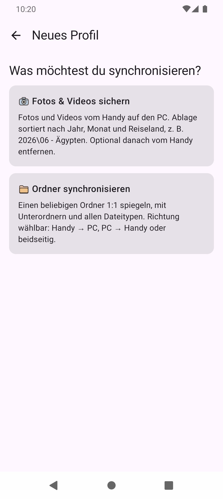
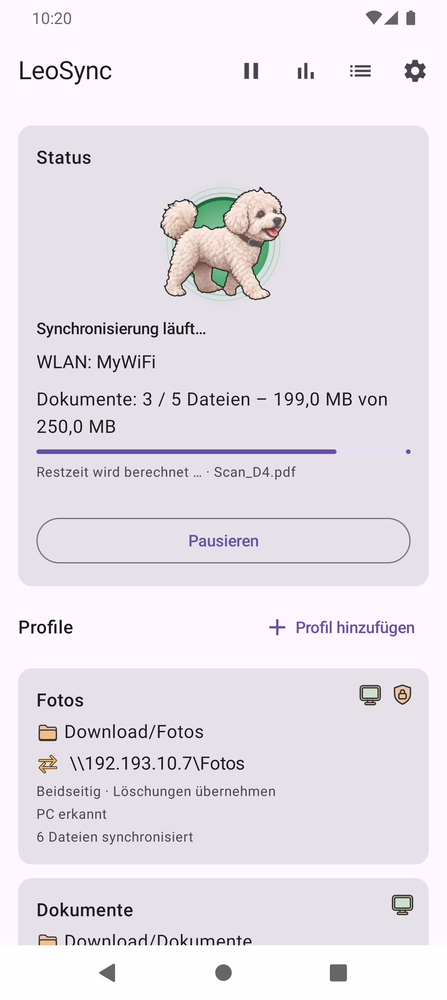
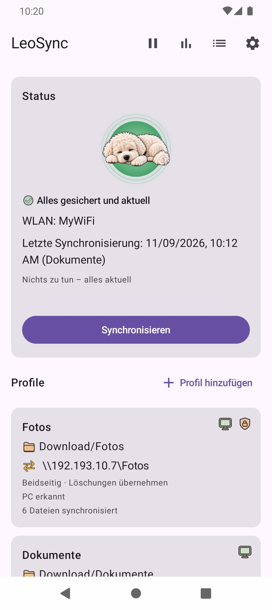
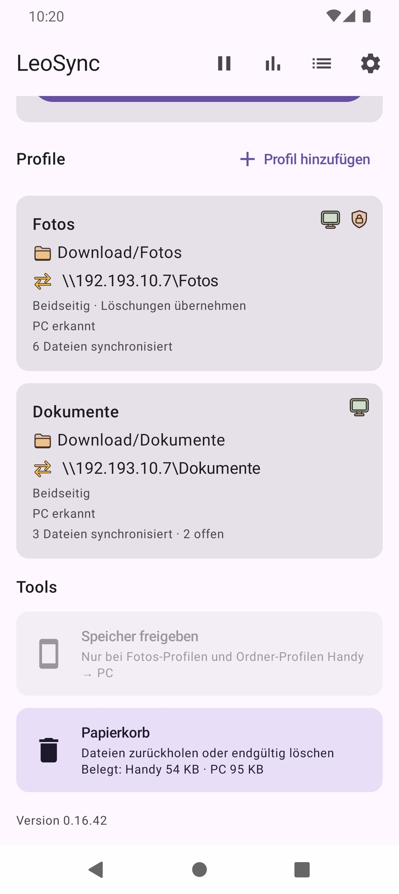

Android-Fotos automatisch auf PC oder NAS sichern – ohne Cloud.
Sichere Fotos und Videos automatisch von deinem Android-Smartphone auf deinem eigenen PC oder NAS. Synchronisiere beliebige Ordner direkt über SMB – ohne externe Cloud-Zwischenstation.
LeoSync verbindet dein Android-Smartphone direkt mit deinem PC oder NAS. Sichere Fotos und Videos automatisch und synchronisiere Dateien über SMB. Du bestimmst, wo deine Daten gespeichert werden.
Fotos und Videos automatisch sichern
Neue Fotos und Videos werden erkannt und über dein Heim-WLAN auf deinen PC oder NAS übertragen, auf Wunsch auch über mobile Daten oder VPN (standardmässig aus). Die Ablage erfolgt nach Jahr, Monat und – wenn zutreffend – Reiseland.
Keine monatlichen Cloud-Abos und kein zusätzlicher Speicherplatz bei einem fremden Anbieter. LeoSync überträgt deine Dateien direkt auf die von dir konfigurierte Netzwerkfreigabe.
Zwei Profiltypen. Viele Möglichkeiten.
Wähle den Profiltyp, der zu deinem Einsatzzweck passt.
Schnell eingerichtet
Dein neues Profil einrichten.
Mit wenigen Einstellungen richtest du ein neues Synchronisierungsprofil ein und verbindest dein Smartphone mit deinem eigenen Speicher.
Du bestimmst selbst, welche Ordner synchronisiert werden und wie die Übertragung erfolgen soll.

Alles im Blick
Auch vor der ersten Sicherung informiert.
LeoSync zeigt dir jederzeit den aktuellen Status. Du siehst auf einen Blick, ob noch Fotos auf ihre Sicherung warten.
So weisst du immer, ob deine Sicherung bereits eingerichtet ist und ob noch etwas zu tun ist.
01 · PHOTO BACKUP
Fotos und Videos sichern
Sichere deine Aufnahmen automatisch auf dem PC. LeoSync sortiert die Dateien anhand ihres Aufnahmedatums.
Übertragung vom Handy zum PC
Sortierung nach Jahr und Monat
Offline-Ländererkennung anhand von GPS
Duplikaterkennung
Mehrstufige Prüfung nach dem Upload
Optionales Aufräumen nach erfolgreicher Sicherung
02 · FOLDER SYNC
Ordner synchronisieren
Halte beliebige Ordner und Dateien auf Handy und PC auf demselben Stand.
Handy → PC, PC → Handy oder beidseitig
Unterstützung beliebiger Dateitypen
Drei-Wege-Abgleich mit Konflikterkennung: Du entscheidest, welche Version gilt
Papierkorb für gelöschte und ersetzte Dateien
Schutz vor unbeabsichtigtem Löschen
Entspannt zurücklehnen.
Ist dein Profil einmal eingerichtet, übernimmt LeoSync die Arbeit im Hintergrund. Du behältst die Kontrolle über die Einstellungen und kannst jederzeit manuell eingreifen.
Deine Synchronisierung. Jederzeit im Blick.
LeoSync zeigt dir transparent, was gerade passiert und wann deine Dateien vollständig übertragen wurden.
Während der Übertragung
Fortschritt jederzeit nachvollziehen.
Verfolge den aktuellen Synchronisierungsfortschritt direkt in der App. Du siehst, welche Dateien übertragen werden und wie weit der Vorgang bereits fortgeschritten ist.

Erfolgreich abgeschlossen
Alles synchronisiert.
Nach erfolgreicher Übertragung zeigt dir LeoSync, dass keine Dateien mehr auf ihre Synchronisierung warten.
So hast du jederzeit die Gewissheit, dass deine Dateien auf dem aktuellen Stand sind.

Bereit für dein automatisches Foto-Backup?
LeoSync ist kostenlos, quelloffen und sichert deine Fotos direkt auf deinen eigenen PC oder dein NAS.
Android-Dateisynchronisierung mit zuverlässiger Übertragung.
LeoSync bietet fortsetzbare SMB-Dateiübertragungen, mehrere Synchronisierungsprofile und eine zuverlässige Kontrolle deiner Dateien zwischen Android, PC und NAS.
Fortsetzbare SMB-Dateiübertragungen
Wird eine Dateiübertragung zwischen Android und PC oder NAS unterbrochen, kann LeoSync den Upload fortsetzen. Bis zu vier Übertragungen laufen parallel. Dateien werden erst nach vollständiger Übertragung endgültig umbenannt.
Mehrere Synchronisierungsprofile verwalten
Erstelle mehrere Synchronisierungsprofile für unterschiedliche PC- und NAS-Ziele. Mit der Simulation kannst du vor einer Android-Dateisynchronisierung prüfen, welche Änderungen vorgenommen würden.
Dateidatum bei der Synchronisierung erhalten
Bei der Übertragung auf den PC bleibt das Änderungsdatum der Dateien vom Android-Gerät erhalten. So bleiben wichtige Zeitinformationen auch nach der Dateisynchronisierung bestehen.
Papierkorb für synchronisierte Dateien
Der LeoSync-Papierkorb schützt gelöschte und ersetzte Dateien. Die Aufbewahrungsfrist lässt sich für jedes Synchronisierungsprofil individuell einstellen. Standardmässig werden Dateien nach 30 Tagen entfernt. Mit 0 Tagen bleiben sie dauerhaft erhalten.
Schutzbremse gegen Massenlöschungen
Würden auf einmal viele Dateien gelöscht (Standard: mehr als 20 %), fehlt ein ganzer Ordner oder passt ein neu gewählter Ordner nicht zum bisherigen Stand, hält LeoSync den Ordner-Sync an und fragt zuerst bei dir nach. Die Schwelle lässt sich pro Profil einstellen.
Simulation und Freigabe vor dem Start
Nach dem Anlegen eines Profils kannst du zuerst simulieren, was passieren würde, ohne dass etwas übertragen wird. Ein neues Profil startet erst automatisch, nachdem du es einmal von Hand synchronisiert hast.
Eigene Monatsordner
Monatsordner können umbenannt werden, solange die Monatszahl erhalten bleibt. Bereits vorhandene Ordner werden weiterverwendet. Für Fotos-Profile stehen drei Ordnerstrukturen zur Wahl: Jahr\Monat - Land (Standard), Jahr\Land\Monat oder Jahr\Monat\Land. Die Wahl ist bis zur ersten Synchronisierung des Profils möglich.
Sicherungserinnerung
Wenn neue Fotos warten und längere Zeit keine Sicherung erfolgt ist, kann LeoSync dich daran erinnern. Der Zeitraum ist einstellbar.
Speicherplatz auf dem Handy freigeben
Alte Dateien, die nachweislich auf dem PC liegen, kann LeoSync vom Handy entfernen. Jede Datei wird vorher auf dem PC geprüft. Die Auswahl erfolgt nach Alter, Ordner, Dateityp, Grösse und Ausnahmen, mit Vorschau. Fotos und Videos landen ab Android 11 im Papierkorb der Galerie.
Dateifilter für Ordner-Profile
Mit «Nur diese Dateien» und «Diese Dateien ausschliessen» legst du über Muster wie *.pdf oder Temp/** fest, was synchronisiert wird.
Statistik zu deinen Sicherungen
LeoSync zeigt dir Anzahl und Speicherbedarf deiner gesicherten Fotos und Videos pro Jahr und Land.
Profile sichern und wiederherstellen
Profile, Einstellungen und Sync-Status lassen sich als Datei exportieren und wieder importieren. SMB-Passwörter werden nur mit einem Export-Passwort verschlüsselt mitgesichert.
SMB-Verschlüsselung pro Profil
Pro Profil wählst du, ob die Übertragung verschlüsselt wird: Aus, Wenn möglich (Standard) oder Erforderlich. Bei «Erforderlich» wird ohne Verschlüsselung keine Verbindung aufgebaut und kein Passwort gesendet. Verschlüsselung gibt es ab SMB 3; «Verbindung testen» zeigt, ob sie aktiv ist.
Pause und «Nur beim Laden»
Die Automatik lässt sich für eine bestimmte Zeit oder «für immer» pausieren; dann synchronisiert LeoSync nur noch von Hand. Auf Wunsch läuft die Synchronisierung nur, solange das Handy am Ladegerät hängt.
Verlauf und Diagnose
Der Verlauf zeigt jeden Lauf mit Protokoll und lässt sich über das Android-Teilen-Menü exportieren. Die kopierbaren Diagnosedaten enthalten keine Passwörter, Benutzer-, Rechner- oder Ordnernamen. Für gängige Hersteller zeigt die App, welche Einstellungen den Hintergrundbetrieb sichern.
Alles im Griff
Profile und Werkzeuge zentral verwalten.
Verwalte deine Synchronisierungsprofile und greife direkt auf die wichtigsten Werkzeuge von LeoSync zu.
Die übersichtliche Oberfläche gibt dir jederzeit die Kontrolle über deine Sicherungen und Synchronisierungen.

Privates Android-Backup. Deine Daten bleiben bei dir.
So geht LeoSync mit deinen Dateien, Zugangsdaten und Standortdaten um.
Android-Fotos auf eigenem PC oder NAS speichern
LeoSync überträgt deine Fotos, Videos und Dateien direkt über eine SMB-Netzwerkfreigabe auf deinen Windows-PC oder NAS. Ein Cloud-Konto brauchst du dafür nicht. Du bestimmst selbst, wo dein Android-Backup liegt.
Lokale GPS- und Ländererkennung
LeoSync erkennt das Land deiner Fotos direkt auf dem Android-Gerät anhand der GPS-Metadaten und einer integrierten Datenbank. Die geografische Zuordnung benötigt keinen externen Geolocation-Dienst und keine Cloud-Abfrage.
SMB-Passwörter sicher im Android Keystore speichern
Die Zugangsdaten für deine SMB-Netzwerkfreigaben werden mithilfe des Android Keystore geschützt gespeichert. Deine SMB-Passwörter werden nicht automatisch an den Entwickler übertragen. So bleiben die Zugangsdaten für deinen PC oder NAS unter deiner Kontrolle. Pro Profil kannst du zusätzlich die PC-Kennung prüfen lassen: LeoSync erkennt deinen PC, bevor Benutzername und Passwort gesendet werden. Das schützt davor, dass die Zugangsdaten an einen fremden Server in einem fremden Netz gehen.
In wenigen Schritten startklar.
Die Einrichtung führt dich durch die wichtigsten Einstellungen.
Und los geht's!
LeoSync kümmert sich um deine Dateien. Die Synchronisierung läuft automatisch im Hintergrund, sobald deine Bedingungen erfüllt sind. Du behältst jederzeit die Kontrolle.
1
Installieren
Lade die aktuelle APK über GitHub Releases herunter und installiere LeoSync auf deinem Android-Gerät.
2
Profil einrichten
Lege deine Netzwerkfreigabe, Zugangsdaten, WLAN-Verbindung und die zu synchronisierenden Quellordner fest.
3
Erste Synchronisierung
Starte zunächst eine Simulation oder eine manuelle Synchronisierung. Ein neues Profil wird erst nach einer ersten manuellen Synchronisierung automatisch ausgeführt.
Was du dafür benötigst.
Die technischen Voraussetzungen für deine erste Synchronisierung.
Systemvoraussetzungen
Android 10 oder neuer
Windows-PC oder NAS mit SMB2- oder SMB3-Freigabe
Benutzerkonto mit Schreibrechten auf der Freigabe
Netzwerkverbindung zwischen Handy und Speicherziel
Hinweis: Für die automatische WLAN-Erkennung benötigt Android bestimmte Berechtigungen. Insbesondere kann die Standortberechtigung erforderlich sein, damit Android den WLAN-Namen bereitstellt. LeoSync verwendet diese Berechtigung nicht zur Standortbestimmung.
Die App erscheint auf Deutsch oder Englisch, je nach Sprache deines Handys. Die Sprache lässt sich in den Einstellungen auch fest wählen.
BETA
Android-Fotos sichern und Dateien synchronisieren.
Lade LeoSync für Android herunter und sichere Fotos und Videos automatisch auf deinem eigenen Windows-PC oder NAS. Synchronisiere beliebige Dateien und Ordner direkt über SMB – ohne externe Cloud.
Lade die aktuelle LeoSync-APK direkt über GitHub Releases herunter und installiere sie auf deinem Android-Gerät. LeoSync kann anschliessend selbstständig nach verfügbaren Updates suchen.
Häufige Fragen zu Android Foto-Backup und Synchronisierung.
Antworten zu LeoSync, automatischem Foto-Backup, NAS-Synchronisierung und Dateitransfer über SMB.
Kann ich mit LeoSync Android-Fotos ohne Cloud sichern?
Ja. LeoSync sichert Fotos und Videos direkt von deinem Android-Smartphone auf deinen eigenen PC oder NAS. Die Übertragung erfolgt über SMB im lokalen Netzwerk. Du benötigst weder ein Cloud-Konto noch einen externen Cloud-Speicherdienst.
Kann ich Android-Fotos auf einem NAS sichern?
Ja. Mit LeoSync kannst du Fotos und Videos automatisch von deinem Android-Smartphone auf einem NAS sichern. Voraussetzung ist eine erreichbare SMB2- oder SMB3-Netzwerkfreigabe und ein Benutzerkonto mit den erforderlichen Schreibrechten.
Kann ich Dateien zwischen Android und PC synchronisieren?
Ja. Mit den Ordner-Profilen von LeoSync kannst du Dateien zwischen deinem Android-Smartphone und einem Windows-PC synchronisieren. Die Übertragung funktioniert vom Handy zum PC, vom PC zum Handy oder bidirektional über eine SMB-Netzwerkfreigabe.
Was passiert bei einem Synchronisierungskonflikt?
LeoSync verwendet einen Drei-Wege-Abgleich zwischen Handy, PC und dem zuletzt bekannten Stand. Wurde dieselbe Datei auf beiden Seiten geändert, entscheidest du je Datei: Handy behalten, PC behalten oder beide behalten (die Handy-Version erhält dann das Suffix _conflict-phone). Alternativ kannst du im Profil festlegen, dass automatisch die neuere Datei gewinnt. Die unterlegene Version landet immer im Papierkorb. Bei einseitigen Profilen gewinnt die Quelle.
Wie kann ich gelöschte Dateien in LeoSync wiederherstellen?
Der integrierte LeoSync-Papierkorb bewahrt gelöschte Dateien und ersetzte Dateiversionen auf. Du kannst einzelne Dateien, komplette Ordner oder alle Dateien eines bestimmten Tages wiederherstellen. So lassen sich versehentlich gelöschte oder überschriebene Dateien zurückholen.
Ist LeoSync kostenlos?
Ja. LeoSync kannst du kostenlos über GitHub Releases herunterladen. Die App steht unter der MIT-Lizenz, den Quellcode findest du im GitHub-Repository. Die aktuelle Version ist eine Beta.
Wie bekomme ich Hilfe?
Eine Schritt-für-Schritt-Anleitung mit Lösungen für häufige Meldungen findest du auf der Hilfeseite, weitere Dokumentation im GitHub-Repository. Fragen, Fehlerberichte und Verbesserungsvorschläge kannst du über GitHub Issues einreichen.
Welche Berechtigungen benötigt LeoSync?
Damit LeoSync alle Funktionen nutzen kann, benötigt die App je nach Android-Version und Verwendung einige Berechtigungen, die du ausdrücklich freigeben musst.
1. Fotos und Videos
LeoSync benötigt Zugriff auf deine Fotos und Videos, um die ausgewählten Medien sichern und synchronisieren zu können.
Fotos: Ermöglicht den Zugriff auf deine Bilder.
Videos: Ermöglicht den Zugriff auf deine Videos.
Standort in Fotos: Ermöglicht das Lesen der GPS-Daten in deinen Fotos, damit LeoSync die Länderordner anlegen kann.
2. Standort und WLAN-Erkennung
Android verlangt für die automatische Erkennung des verbundenen WLAN-Namens (SSID) bestimmte Standortberechtigungen. Damit LeoSync dein WLAN auch im Hintergrund erkennen kann, kann zusätzlich die Einstellung „Standort – Immer zulassen“ erforderlich sein.
Standortzugriff: Ermöglicht die von Android vorgeschriebene WLAN-Erkennung.
Standortzugriff im Hintergrund: Ermöglicht die WLAN-Erkennung, auch wenn LeoSync nicht geöffnet ist.
Wichtig zum Datenschutz: LeoSync verwendet die beiden Standortberechtigungen dieses Abschnitts ausschliesslich zur WLAN-Erkennung. Dein aktueller Standort wird weder ermittelt noch übertragen. Die Ländererkennung erfolgt unabhängig davon vollständig offline anhand der GPS-Koordinaten in den Metadaten deiner Fotos und Videos.
3. Benachrichtigungen
LeoSync benötigt deine Zustimmung, um dich über laufende und abgeschlossene Synchronisierungen informieren zu können. Unter Android 13 und neuer muss der Benachrichtigungszugriff ausdrücklich freigegeben werden.
4. Akkuoptimierung
Damit Hintergrundsynchronisierungen möglichst zuverlässig ausgeführt werden, kann LeoSync eine Ausnahme von der Android-Akkuoptimierung anfordern. Dadurch werden Einschränkungen durch Energiesparmassnahmen reduziert. Du musst dieser Einstellung gegebenenfalls ausdrücklich zustimmen.
5. Installation von App-Updates
Wenn LeoSync Updates direkt über APK-Dateien installiert, muss Android gegebenenfalls die Berechtigung erteilt werden, Apps aus dieser Quelle zu installieren. Die Installation eines Updates muss anschliessend von dir bestätigt werden.